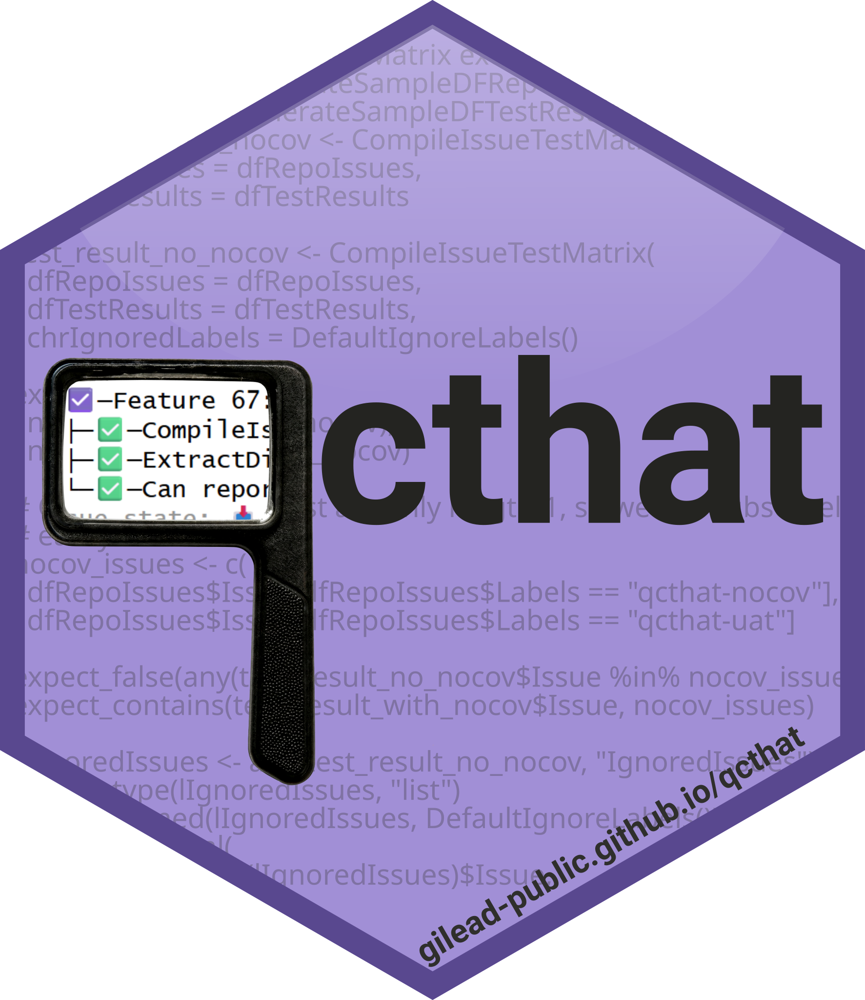

User acceptance testing with ExpectUserAccepts
Source:vignettes/expect_user_accepts.Rmd
expect_user_accepts.RmdSome quality requirements can’t be verified by automated tests.
Aesthetic changes to an HTML report, layout adjustments, or visual
design updates require a human to look at the result and confirm it
meets expectations. ExpectUserAccepts() bridges this gap by
connecting testthat tests to GitHub issues that a
reviewer can close to indicate acceptance.
This extends the test coverage that qcthat tracks to include things that only a person can verify, which is often exactly what matters most to stakeholders.
The workflow involves three roles:
- 🧑💻 PD (Program Developer): writes the code fix and the acceptance test
- 💼 USR (User/Reviewer): inspects the result and closes the issue to accept
- 🤖 AUTO (Automated System): re-runs the test suite when the issue is closed
The scenario
Suppose issue #42 documents an aesthetic problem: the
HTML report header uses outdated brand colors. A developer creates
branch fix-42, implements the CSS changes, and needs
sign-off from a non-technical reviewer before the fix is considered
complete.
The developer 🧑💻 adds a test:
test_that("Report header uses the updated brand colors (#42)", {
ExpectUserAccepts(
strDescription = "Report header uses updated brand colors",
intIssue = 42L,
chrInstructions = "Open the report at https://example.com/preview and inspect the header.",
chrChecks = c(
"Header background is #59488f",
"Logo is centered and not clipped",
"Font renders as Montserrat on the title"
),
chrAssignees = "design-reviewer"
)
})-
strDescription: a short summary that becomes the sub-issue title. -
intIssue: the parent GitHub issue number (#42). Even if the enclosingtest_that()links to multiple issues, this must be a single issue number. -
chrInstructions: optional context for the reviewer, such as a link to a preview deployment. -
chrChecks: checkbox items the reviewer will see in the sub-issue body. -
chrAssignees: GitHub username(s) of the reviewer(s) to assign. This parameter defaults to aqcthat_UAT_ASSIGNEESenvironment variable, allowing you to set assignees dynamically in automated checks. We recommend leaving the assignee blank in the individual test then setting it dynamically through the GitHub action, as described in Environment variables.
What happens behind the scenes
When the test runs, ExpectUserAccepts() performs the
following steps:
Guard checks. The function only executes when not on CRAN, inside a git repository, and online. Otherwise it silently returns without side effects.
Issue lookup. Searches for an existing child issue of
#42with theqcthat-uatlabel and a matching title ("qcthat Acceptance for #42: Report header uses updated brand colors").-
Issue creation. If no matching child issue exists, creates one as a sub-issue of
#42with:- The title above
- A body containing: “Close this issue to indicate your
acceptance.”, the
chrInstructionstext, and checkbox items fromchrChecks - The
qcthat-uatlabel
Assignment. Assigns the specified GitHub user(s). If the issue was previously closed and a new assignee is added, the issue is automatically re-opened.
-
State check.
- If the sub-issue is closed:
testthat::pass(). - If the sub-issue is open:
testthat::fail(), but only whenlglReportFailureisTRUE. By default this is controlled by theqcthat_UATenvironment variable (see Environment variables). WhenlglReportFailureisFALSE, the expectation is skipped (returnsNULLwithout signalling a condition, so other expectations in the sametest_that()block will still run).
- If the sub-issue is closed:
Logging. Records the result to an internal registry used by
CommentUAT()to post status reports on pull requests.
During local development, the test does not fail by
default because the qcthat_UAT environment variable is not
set. It only reports failures in the GitHub Actions workflow where
qcthat_UAT: true is configured.
The reviewer’s 💼 workflow
- The reviewer receives a GitHub notification for the assigned sub-issue.
- The issue body lists the checks as checkboxes and includes any instructions.
- The reviewer inspects the report (e.g., on a deployed preview or locally) and works through the checklist.
- If satisfied, the reviewer closes the issue to indicate acceptance.
- If changes are needed, the reviewer comments with required changes and leaves the issue open.
GitHub Actions 🤖 integration
The qcthat.yaml workflow (installed via
use_qcthat()) handles the automated side:
- When a
qcthat-uatlabeled issue is closed, the workflow fires on theissues: [closed]event. - The workflow runs
TriggerUAT(), which finds open pull requests referencing the closed issue. - If no workflow run is already in progress for those PRs, the QC workflow is re-triggered.
- On re-run, the test suite executes again. This time
ExpectUserAccepts()sees the sub-issue is closed and callstestthat::pass(). - The UAT report comment on the PR is updated to reflect the accepted state.
This means the reviewer does not need to understand R, testthat, or the CI system. They just close a GitHub issue.
Environment variables
| Variable | Purpose | Default |
|---|---|---|
qcthat_UAT |
Set to "TRUE" to make open UAT issues report as test
failures. Checked by IsCheckingUAT(). |
"" (failures are not reported) |
qcthat_UAT_ASSIGNEES |
Comma-separated GitHub usernames for default assignees. | "" |
Both are typically set in .github/workflows/qcthat.yaml
rather than locally.
Tips
- Keep
strDescriptionshort and specific — it becomes the sub-issue title. - Use
chrInstructionsto link the reviewer to a preview deployment or specific page in the report. - Multiple
ExpectUserAccepts()calls can exist in the same test file (even withing the sametest_that()block), each tracking a different aspect of the same issue or different issues. - You can set assignees via the
qcthat_UAT_ASSIGNEESenvironment variable in your workflow YAML instead of hard-coding usernames. This allows different assignees per branch target:
# In your workflow YAML:
# qcthat_UAT_ASSIGNEES: "design-reviewer,product-owner"
# In your test — uses the env var by default:
test_that("dashboard layout matches mockup (#55)", {
ExpectUserAccepts(
strDescription = "Dashboard layout matches mockup",
intIssue = 55L,
chrChecks = c(
"Sidebar collapses on mobile",
"Charts are responsive"
)
)
})